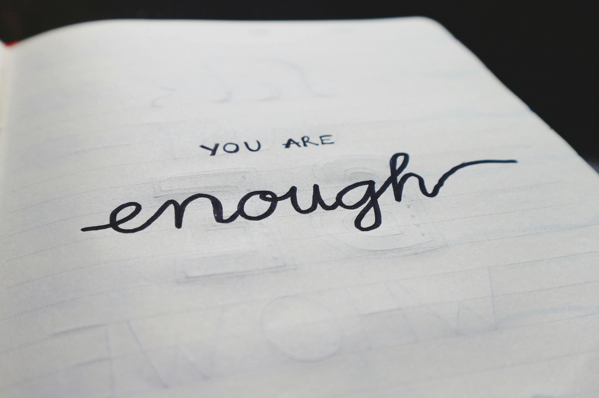
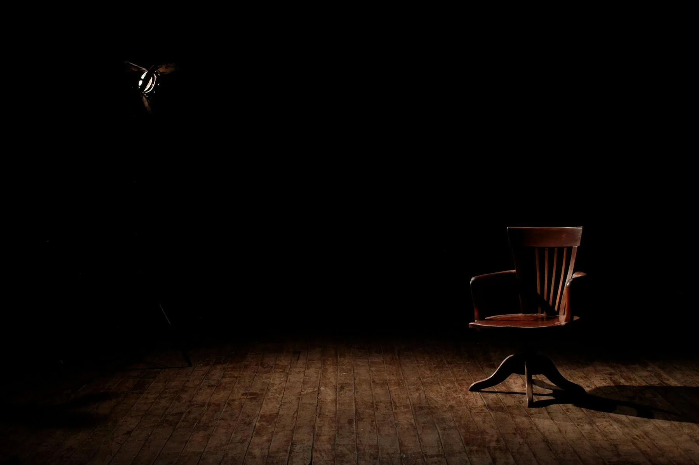

BlogLife
Stories
About
Contacts
The Last Message
[Click to read full story]
A young man discovers a scheduled message from his late mother that arrives one year after her death. The message changes how he sees grief, love, and time.
The Bench at Kilometer Zero

[Click to read full story]
Two strangers meet regularly on a forgotten bench at the starting point of a highway, slowly realizing they are both trying to restart their lives.
Offline for a Day
[Click to read full story]
A college student disconnects from the internet for 24 hours and unexpectedly reconnects with himself.
The Room with No Windows

[Click to read full story]
A night-shift security guard assigned to an unused building begins questioning his own emotional isolation after spending nights in a windowless room.
Borrowed Shoes
[Click to read full story]
A teenager forced to wear borrowed shoes to school learns an unexpected lesson about empathy and quiet kindness.